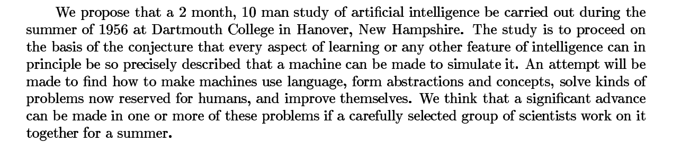
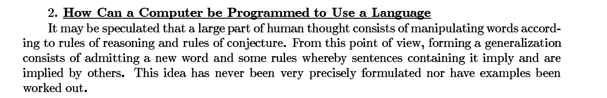
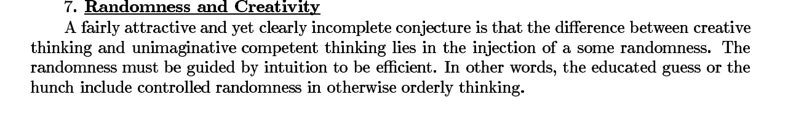
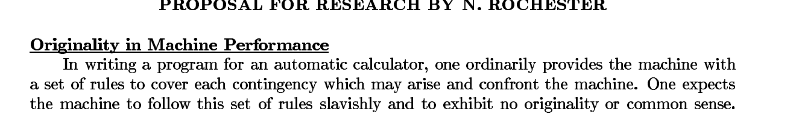
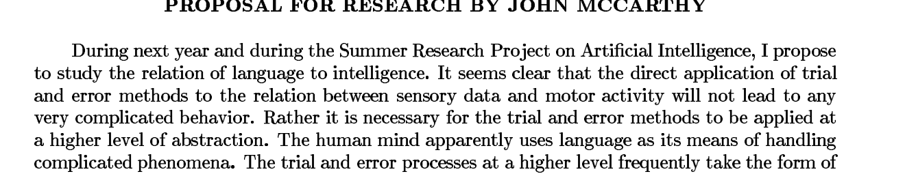

The first research proposal for AI outlined a plan for what researchers wanted to use AI for.

Do you think every aspect of human creativity can be described precisely enough for a machine to simulate it?

If writing captions or crafting stories is just rules to be replicated, what does that mean for your own creative process?

Is creativity just controlled randomness? Is that all it is when AI does it — is that all it is when you do it?

Does a machine that follows rules “slavishly,” with no originality or common sense, sound like any AI tool you’ve used?

The people who decided what AI should do didn’t look like most of the people it would affect — what does that leave out?
 p. 2
p. 2
 p. 7
p. 7
 p. 10
p. 10
Source: dartmouth_aifoundations.pdf